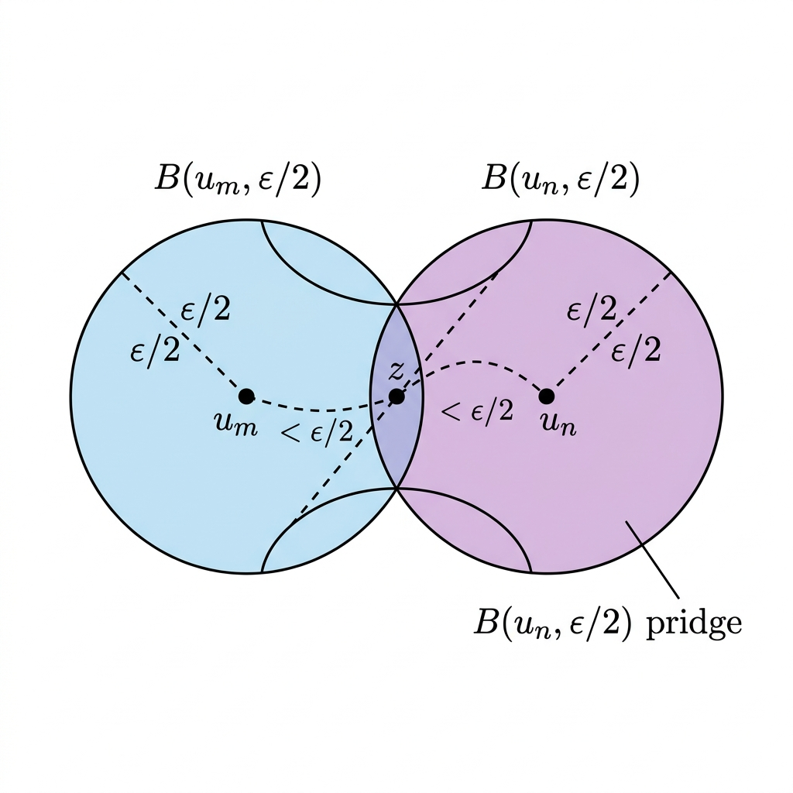

Cauchy Sequence of Irreducible Space

Mathematical Exposition
In topology and metric space theory, we are accustomed to spaces where sequences can behave wildly. For instance, in Euclidean space $\mathbb{R}^d$, most sequences are not Cauchy. However, this theorem establishes a fascinating topological constraint: in any irreducible pseudometric space, every sequence is Cauchy.
Key Definitions
- Pseudometric Space: A generalization of a metric space where the distance between two distinct points can be zero: $dist(x,y) \geq 0$, $dist(x,x) = 0$, $dist(x,y) = dist(y,x)$, and the triangle inequality $dist(x,z) \leq dist(x,y) + dist(y,z)$ holds.
- Irreducible Space: A topological space $X$ is irreducible if it cannot be written as the union of two proper closed subsets. Equivalently, every pair of nonempty open sets has a nonempty intersection.
- Cauchy Sequence: A sequence $(u_n)$ in $X$ such that for every $\epsilon > 0$, there exists some index $N$ such that $dist(u_m, u_n) < \epsilon$ for all $m, n \ge N$.
The Core Proof Logic
Let $(u_n)_{n \in \mathbb{N}}$ be an arbitrary sequence in an irreducible pseudometric space $X$. We wish to show that $(u_n)$ is Cauchy.
Given any $\epsilon > 0$, we consider any two terms $u_m$ and $u_n$ of the sequence. Let us define two open balls of radius $\epsilon/2$ around them: $$B_m = B\left(u_m, \frac{\epsilon}{2}\right) \quad \text{and} \quad B_n = B\left(u_n, \frac{\epsilon}{2}\right)$$ Since open balls in a pseudometric space are nonempty (as they contain their centers), $B_m$ and $B_n$ are nonempty open sets.
Because the space $X$ is irreducible, any two nonempty open sets must intersect. Thus, we are guaranteed that: $$B_m \cap B_n \neq \emptyset$$ This means there exists some point $z \in X$ which lies in both balls, satisfying: $$dist(u_m, z) < \frac{\epsilon}{2} \quad \text{and} \quad dist(z, u_n) < \frac{\epsilon}{2}$$
Applying the triangle inequality, we obtain: $$dist(u_m, u_n) \le dist(u_m, z) + dist(z, u_n) < \frac{\epsilon}{2} + \frac{\epsilon}{2} = \epsilon$$ Since this inequality holds for all indices $m, n \ge 0$, the sequence is indeed Cauchy.
Triviality of the Pseudometric
Mathematically, this result points to a deeper property of irreducible pseudometric spaces: the pseudometric must be trivial. Specifically, the distance between any two points in the space is exactly $0$.
To see why, suppose there existed two points $x, y \in X$ with $dist(x, y) = d > 0$. The open balls $B(x, d/2)$ and $B(y, d/2)$ would be disjoint nonempty open sets, directly contradicting the assumption that the space is irreducible. Thus, all points are at distance $0$, which trivially forces every sequence to be Cauchy.
import Mathlib
open Topology Uniformity Set Filter
/-- In an irreducible pseudometric space, every sequence is Cauchy. This is because
all nonempty open sets must intersect (by irreducibility), so in particular all open balls
overlap, forcing all pairwise distances below any positive threshold. -/
theorem cauchySeq_of_irreducibleSpace [PseudoMetricSpace α] [IrreducibleSpace α] (u : ℕ → α) : CauchySeq u := by
rw [Metric.cauchySeq_iff]; intro ε hε; use 0; intro m _ n _
obtain ⟨z, hz, hzn⟩ := (Metric.mem_closure_iff.mp
((IsOpen.dense Metric.isOpen_ball ⟨u m, Metric.mem_ball_self (half_pos hε)⟩) (u n)))
(ε / 2) (half_pos hε)
rw [Metric.mem_ball] at hz
calc dist (u m) (u n) ≤ dist (u m) z + dist z (u n) := dist_triangle _ _ _
_ < ε / 2 + ε / 2 := add_lt_add (by rwa [dist_comm] at hz) (by rwa [dist_comm] at hzn)
_ = ε := add_halves ε